← Към игратаOriginal / Champagne Mystic
Архивно сравнение на атмосферите от v0.3.63. Текущата игра запазва Original.
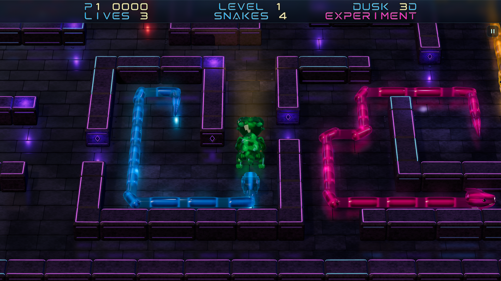
Original · back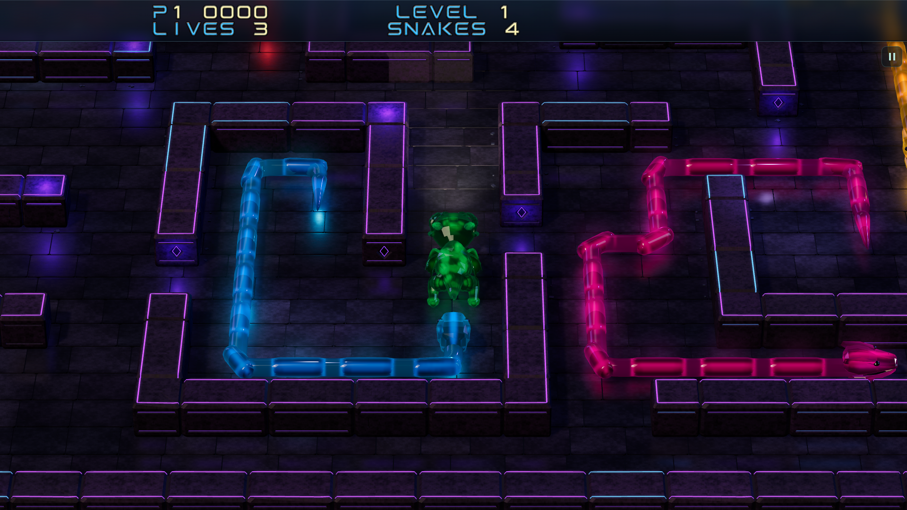
Champagne Mystic · back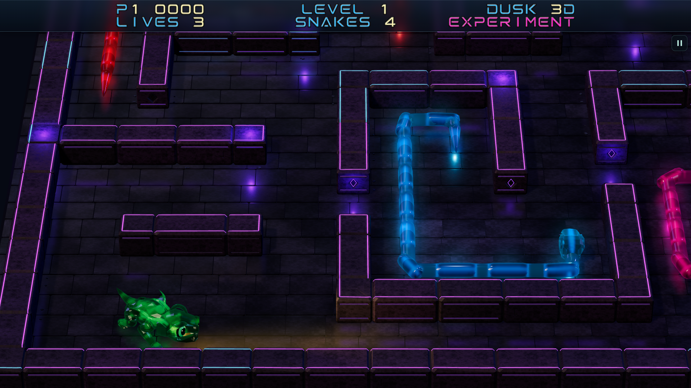
Original · corridor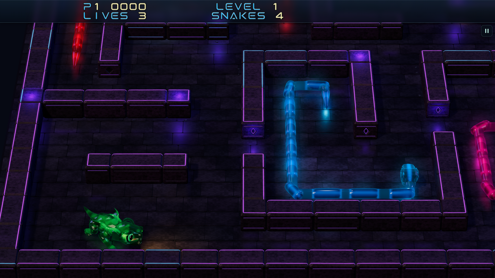
Champagne Mystic · corridor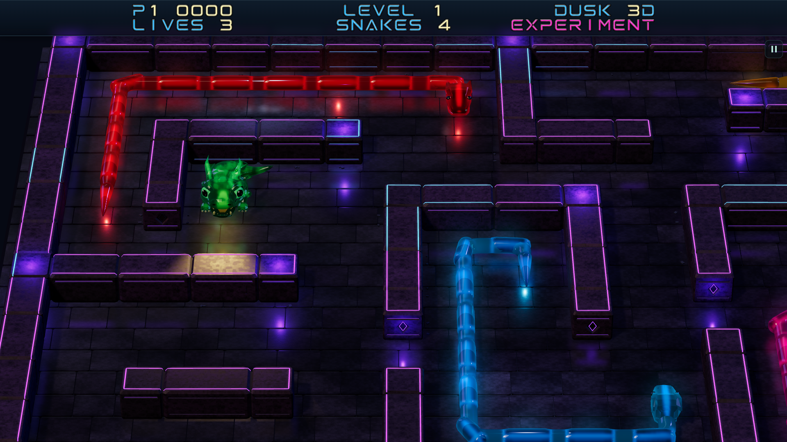
Original · dark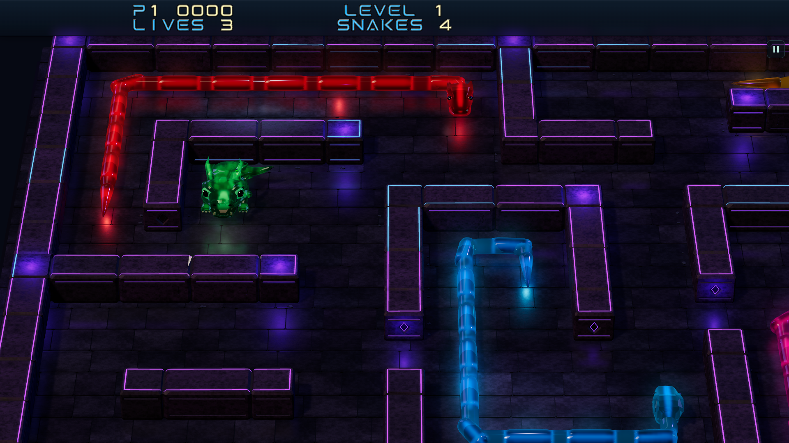
Champagne Mystic · dark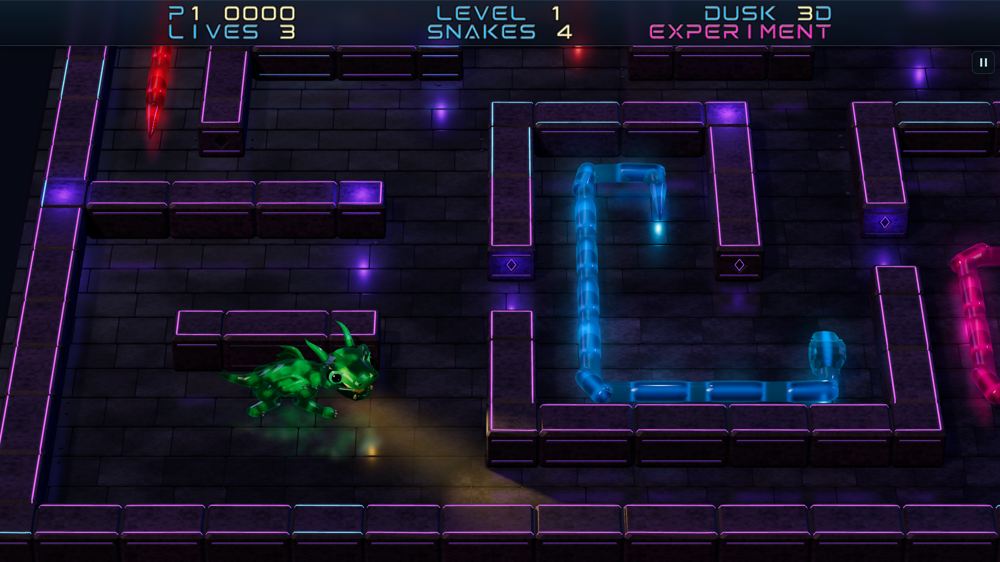
Original · diagonal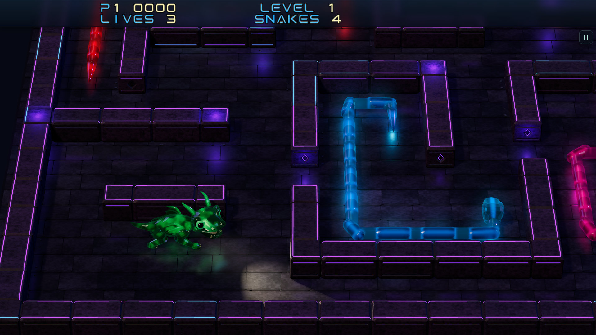
Champagne Mystic · diagonal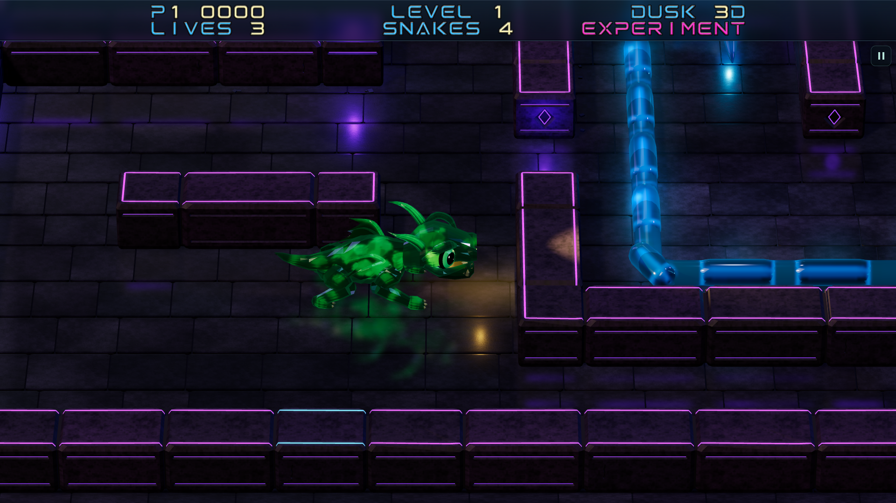
Original · floor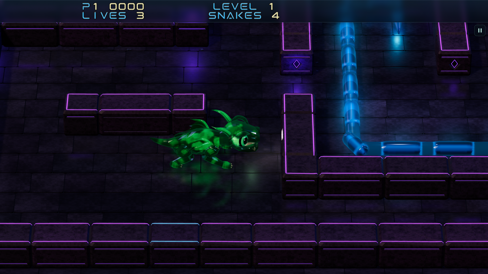
Champagne Mystic · floor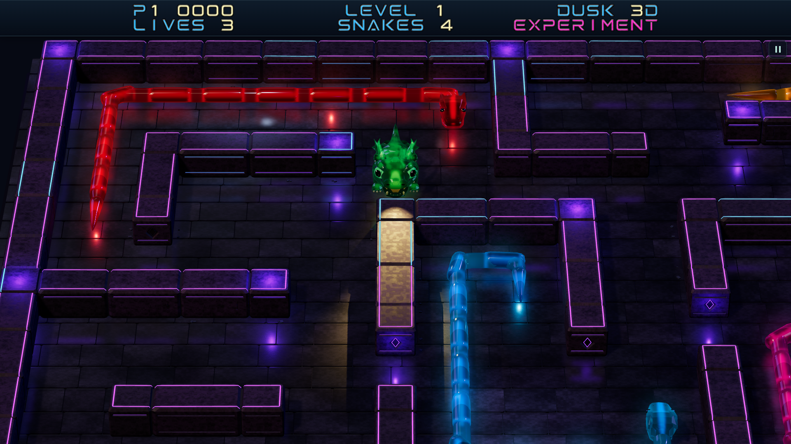
Original · front-wall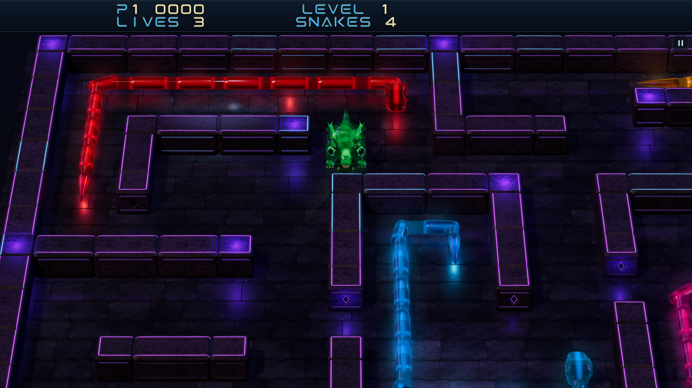
Champagne Mystic · front-wall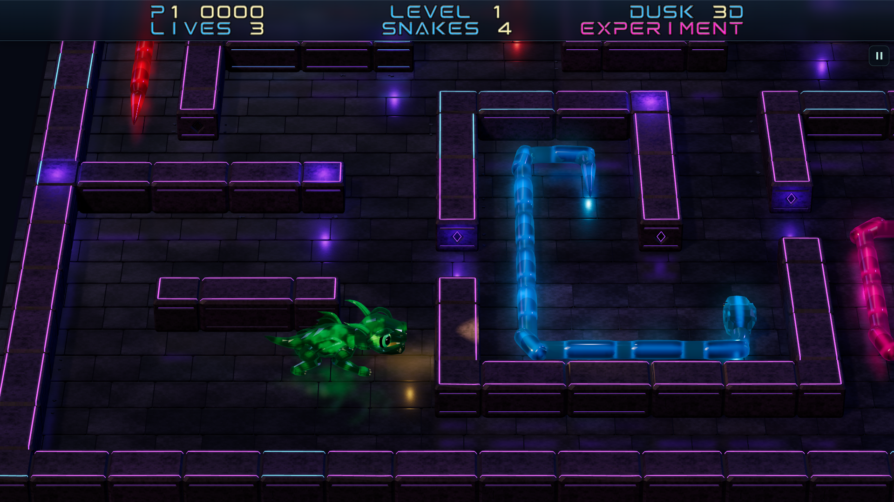
Original · near-wall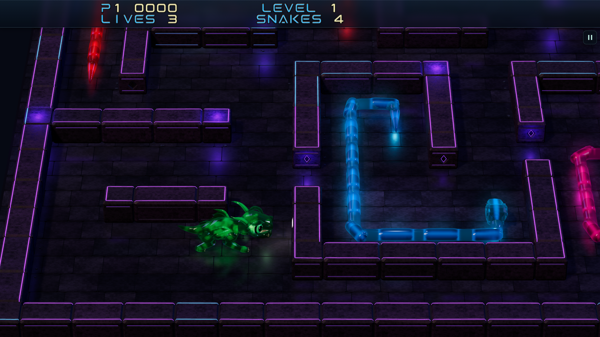
Champagne Mystic · near-wall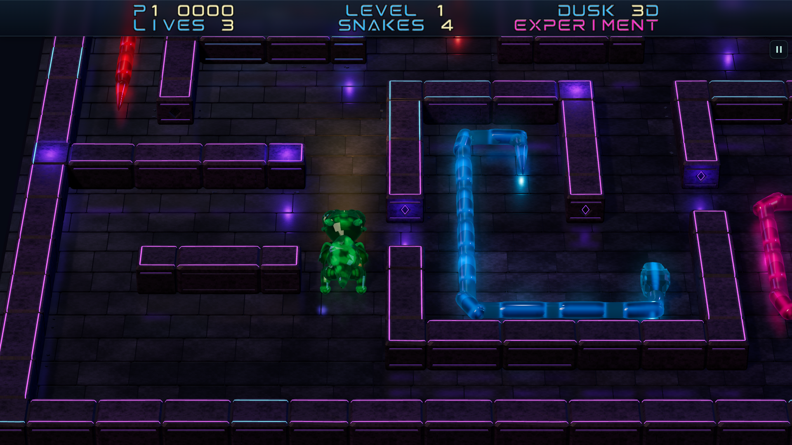
Original · turn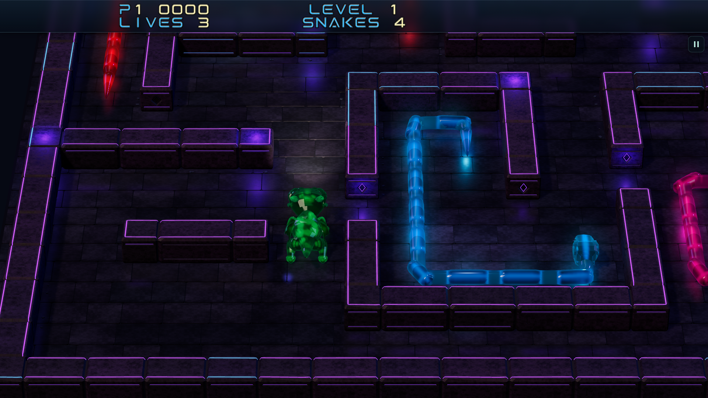
Champagne Mystic · turn